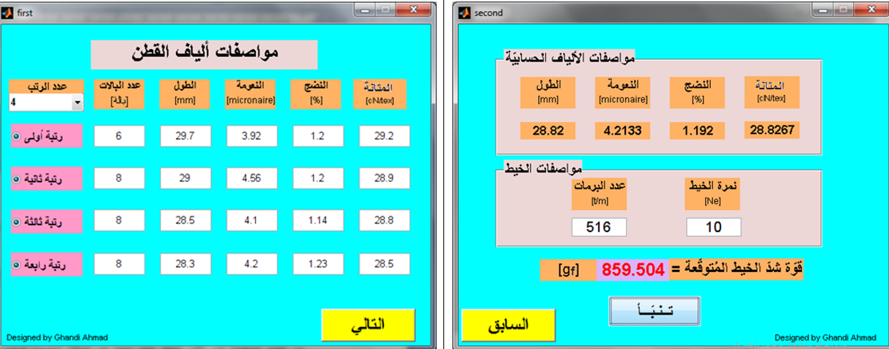
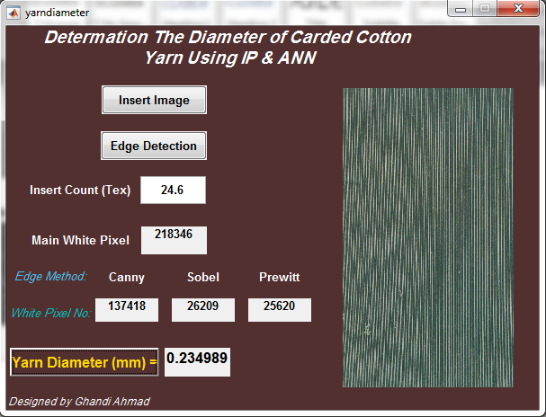
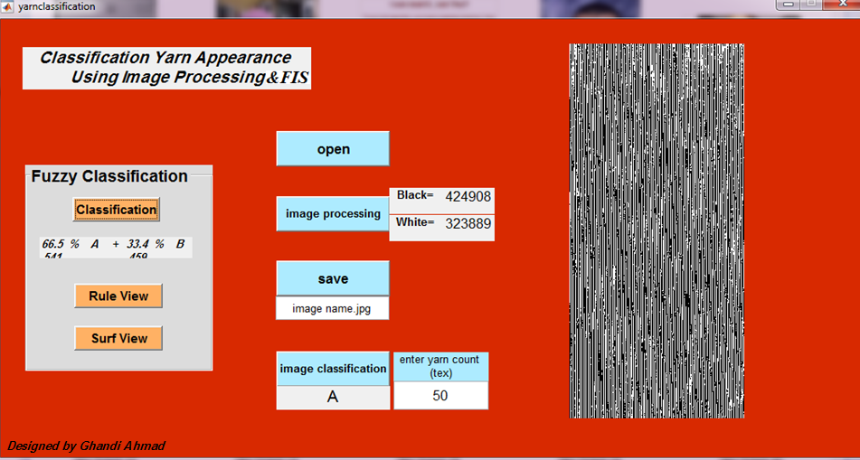
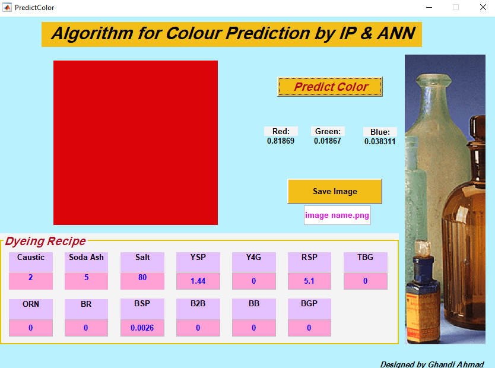

It's easy! Just set your Birthdate then click on "Calculate my Age".
HAPPY EXPERIENCE!
Enter Date of Birth:
Day
Month
Year
Date Of Birth:
Today's Date:
Using ANN and IP to Predict Dyeing Recipe and Fabric Colors
Color is the design element and the creative influence on which textile and fashion dyeing designers depend on in attracting the attention of the recipient and addressing him psychologically and emotionally.
The aim of this project is to determine the dye-staffs that will be applied and the concentrations of each of them to improve the color formulation step. Matlab software converts the images into color spaces (RGB, LAB, and HSV), which represent ANN inputs, and ANN output represents dyeing recipe for dyeing of cotton fabrics. Thus reducing the waste of dyeing materials and saving time.
As for the second algorithm is to predict the color which will be obtained from dyeing recipe.
Gallery for Some Projects
1 / 4

Prediction the Tenasity of Cotton Yarn
2 / 4

Using IP & ANN to Determine the Diameter of Cotton Yarn
3 / 4

Classification of Yarn Appearance
4/ 4

Using IP & ANN to Predict the Color form Dyeing Recipe